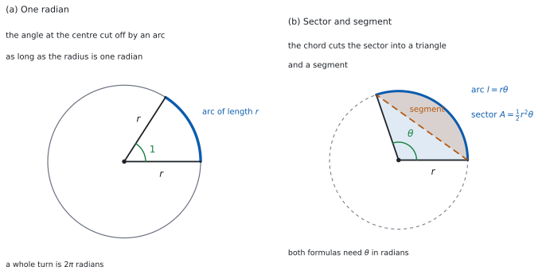

SL 3.4 — Radian measure, arc length and sector area（弧度法・弧の長さ・扇形の面積）
- radian（ラジアン）の定義が言える。
- 度とラジアンを、どちらの向きにも直せる。
- \(30°\)、\(45°\)、\(60°\)、\(90°\)、\(180°\) などを、\(\pi\) を使った正確な形で書ける。
- 弧の長さ \(l = r\theta\) と、扇形の面積 \(A = \tfrac{1}{2}r^{2}\theta\) を使える。
- 弧の長さや面積が分かっているとき、\(\theta\) や \(r\) を逆に求められる。
- 扇形の perimeter（周の長さ）が \(2r + l\) であることを使える。
- segment（弓形）の面積を、扇形から三角形を引いて求められる。
The idea
1. ラジアンとは
角の大きさは、度のほかに radian（ラジアン、弧度）でも測れます。
半径 \(r\) の円で、長さ \(r\) の弧を切り取る中心角が、\(1\) radian です。図 1 の (a) を見てください。
円はどれも相似なので、弧の長さと半径の比は、円の大きさによりません。 だから、どの円で測っても同じ角になります。弧の長さを半径で割った値が、そのまま radian で測った角の大きさです。
円を一周すると、弧の長さは \(2\pi r\) です。半径 \(r\) で割ると \(2\pi\) なので、
\[ \text{（一周）} = 2\pi \ \text{radian} = 360° \tag{1}\]
です。
2. 度とラジアンを行き来する
式 1 を \(2\) で割ると、いちばん使いやすい形になります。
\[ \pi \ \text{radian} = 180° \tag{2}\]
ここから、次の \(2\) つが出ます。
\[ \text{度} \to \text{radian}: \ \times \frac{\pi}{180} \qquad \text{radian} \to \text{度}: \ \times \frac{180}{\pi} \tag{3}\]
たとえば \(210°\) は
\[ 210 \times \frac{\pi}{180} = \frac{210\pi}{180} = \frac{7\pi}{6} \]
で、逆に \(\dfrac{4\pi}{9}\) は
\[ \frac{4\pi}{9} \times \frac{180}{\pi} = \frac{4 \times 180}{9} = 80° \]
です。
答えの大きさで見分けます。 radian の値は度の値よりずっと小さくなります（\(180°\) が \(\pi \approx 3.14\) ですから）。度に直したのに \(3\) くらいの数が出たら、かけ算の向きを取りちがえた可能性が高いので、もう一度見てください。
3. よく使う値
表 1 は、そのつど計算しなくてすむように覚えておく値です。
| 度 | \(30°\) | \(45°\) | \(60°\) | \(90°\) | \(120°\) | \(180°\) | \(270°\) | \(360°\) |
|---|---|---|---|---|---|---|---|---|
| radian | \(\dfrac{\pi}{6}\) | \(\dfrac{\pi}{4}\) | \(\dfrac{\pi}{3}\) | \(\dfrac{\pi}{2}\) | \(\dfrac{2\pi}{3}\) | \(\pi\) | \(\dfrac{3\pi}{2}\) | \(2\pi\) |
この表は公式集にはありません。 覚えるか、式 3 からその場で出します。
radian には単位記号を付けません。 「\(\theta = \dfrac{\pi}{3}\)」と書けば radian です。度のときだけ \(°\) を付けます。
4. 弧の長さ
半径 \(r\)、中心角 \(\theta\) の sector（扇形）で、arc（弧）の長さ \(l\) は
\[ l = r\theta \tag{4}\]
です。図 1 の (b) を見てください。
公式集の 3.4 の欄に Length of an arc として印刷されています。
\(l = r\theta\), where \(r\) is the radius, \(\theta\) is the angle measured in radians
\(\theta\) が radian であることも、公式集に書いてあります。 度のまま入れてはいけません。
扇形の perimeter（周の長さ）は、弧 \(1\) 本と半径 \(2\) 本を足したものです。
\[ \text{perimeter} = 2r + l = 2r + r\theta \tag{5}\]
弧だけで終わらせないでください。
半径 \(4\)、中心角 \(\dfrac{\pi}{6}\) の扇形なら
\[ l = 4 \times \frac{\pi}{6} = \frac{2\pi}{3} \]
です。
5. 扇形の面積
同じ扇形の面積 \(A\) は
\[ A = \frac{1}{2}r^{2}\theta \tag{6}\]
です。
公式集の 3.4 の欄に Area of a sector として印刷されています。
\(A = \dfrac{1}{2}r^2\theta\), where \(r\) is the radius, \(\theta\) is the angle measured in radians
ここでも \(\theta\) は radian です。
さきほどの扇形（\(r = 4\)、\(\theta = \dfrac{\pi}{6}\)）なら
\[ A = \frac{1}{2} \times 16 \times \frac{\pi}{6} = \frac{4\pi}{3} \]
です。
式 4 を 式 6 に入れると、弧の長さから面積を出す形にもなります。
\[ A = \frac{1}{2}r^{2}\theta = \frac{1}{2}r(r\theta) = \frac{1}{2}lr \tag{7}\]
6. 弓形の面積
扇形の \(2\) 本の半径の端を結ぶと、chord（弦）ができます。弦と弧のあいだの部分が segment（弓形）です。
\[ \text{（弓形）} = \text{（扇形）} - \text{（三角形）} = \frac{1}{2}r^{2}\theta - \frac{1}{2}r^{2}\sin\theta \tag{8}\]
三角形の面積は、\(2\) 辺が \(r\)、\(r\) で、そのはさむ角が \(\theta\) なので \(\dfrac{1}{2}r^{2}\sin\theta\) です（SL 3.2）。
この式は公式集にはありません。 \(2\) つの公式を組み合わせて、その場でつくります。
7. 試験での約束
シラバスは、Topic 3 の冒頭で次のように述べています。
On examination papers, radian measure should be assumed unless otherwise indicated.
つまり、\(\theta = 2\) とだけ書いてあれば \(2\) radian です。度なら \(°\) が付きます。
答えの形については、\(\pi\) を使った正確な形でも、小数でもかまいません。 ただし exact と指定されたら \(\pi\) を残します。
TI-Nspire では doc → Settings → Document Settings の Angle を Radian にします。ここが Degree のままだと、\(\sin\left(\dfrac{\pi}{3}\right)\) が 0.0182... のような値になります。
答えが桁ちがいに小さかったら、まず設定を疑ってください。
\(\pi\) は π のキー（または pi）で入れます。3.14 と打ち込まないでください。 丸めが積み重なります。
Paper 1 では使えません。 このページの例題と演習は、すべて手で解ける形にしてあります。

Why it works
なぜ \(l = r\theta\) なのでしょうか。 扇形は、円全体のうち \(\dfrac{\theta}{2\pi}\) の割合を占めています。中心角が一周の何分のいくつか、ということです。
弧の長さも、その割合だけ円周を取ったものです。
\[ l = \frac{\theta}{2\pi} \times 2\pi r = r\theta \]
\(2\pi\) が約分されて消えました。この約分が起きるのは、\(\theta\) を radian で測っているからです。
度で測ると、割合は \(\dfrac{\theta}{360}\) になり、
\[ l = \frac{\theta}{360} \times 2\pi r = \frac{\pi r\theta}{180} \]
となって、\(\dfrac{\pi}{180}\) が残ります。radian を使う理由は、この係数を消せることにあります。
面積も同じです。 円の面積 \(\pi r^{2}\) を、同じ割合だけ取ります。
\[ A = \frac{\theta}{2\pi} \times \pi r^{2} = \frac{1}{2}r^{2}\theta \]
なぜ弓形は引き算なのでしょうか。 弦を引くと、扇形は三角形と弓形の \(2\) つに分かれ、重なりはありません。だから
\[ \text{（扇形）} = \text{（三角形）} + \text{（弓形）} \]
が成り立ち、移項すれば 式 8 になります。
この分け方ができるのは \(0 < \theta < \pi\) のときです。 \(\theta = \pi\) なら三角形がつぶれて、弓形はちょうど半円になります。\(\theta\) が \(\pi\) より大きいときは、弦は扇形の外を通るので、扇形は三角形と弓形には分かれません。大きいほうの弓形がほしいときは、円全体から小さいほうの弓形を引きます。
Worked examples
問題文は英語です。意味が理解できなかったら、問題文の下の「日本語訳」を開いてください。解説は日本語です。
例題も演習も、すべて電卓なしで解けます。 Paper 1 のつもりで解いてください。
例題 1 (a) Find the size, in radians, of an angle of \(135°\), giving your answer in terms of \(\pi\).
(b) Find the size, in degrees, of an angle of \(\dfrac{5\pi}{6}\) radians.
(c) Find the size, in degrees, of an angle of \(2\) radians, giving your answer in exact form.
(d) Explain why the formula \(l = r\theta\) cannot be used with \(\theta\) measured in degrees.
日本語訳
(a) \(135°\) を radian で書きなさい。答えは正確な値で書きなさい。
(b) \(\dfrac{5\pi}{6}\) radian を度で書きなさい。
(c) \(2\) radian の角を度で書きなさい。答えは正確な値で書きなさい。
(d) \(\theta\) を度で測ったとき、公式 \(l = r\theta\) が使えない理由を説明しなさい。
(a) \(\dfrac{\pi}{180}\) をかけます（式 3）。
\[ 135 \times \frac{\pi}{180} = \frac{135\pi}{180} = \frac{3\pi}{4} \]
(b) \(\dfrac{180}{\pi}\) をかけます。
\[ \frac{5\pi}{6} \times \frac{180}{\pi} = \frac{5 \times 180}{6} = 150° \]
(c) 同じように、\(\dfrac{180}{\pi}\) をかけます。\(\pi\) が残ります。
\[ 2 \times \frac{180}{\pi} = \frac{360}{\pi} \]
(d) Explain why なので、英語で理由を書きます。
試験ではこう書く
A sector of angle \(\theta\) is the fraction \(\dfrac{\theta}{2\pi}\) of the whole circle when \(\theta\) is in radians, so its arc is \(\dfrac{\theta}{2\pi} \times 2\pi r = r\theta\). In degrees the fraction is \(\dfrac{\theta}{360}\), giving an arc of \(\dfrac{\pi r\theta}{180}\). For a sector we have \(r > 0\) and \(\theta > 0\), and \(r\theta = \dfrac{\pi r\theta}{180}\) would force \(\theta = 0\). So \(l = r\theta\) is not valid with \(\theta\) in degrees.
（\(\theta\) が radian なら、角 \(\theta\) の扇形は円全体の \(\dfrac{\theta}{2\pi}\) にあたるので、弧は \(\dfrac{\theta}{2\pi} \times 2\pi r = r\theta\) になる。度で測ると割合は \(\dfrac{\theta}{360}\) になり、弧は \(\dfrac{\pi r\theta}{180}\) となる。扇形では \(r > 0\)、\(\theta > 0\) であり、\(r\theta = \dfrac{\pi r\theta}{180}\) とすると \(\theta = 0\) になってしまう。よって度では \(l = r\theta\) は成り立たない、という意味です。）
検算（(a) について）。 足し算で確かめます。 \(\dfrac{3\pi}{4} = \pi - \dfrac{\pi}{4}\) です。\(\pi\) が \(180°\)、\(\dfrac{\pi}{4}\) が \(45°\) なので \(180° - 45° = 135°\) ✓ かけ算を通らない道すじでも同じです。
検算（(b) について）。 逆向きに直します。 \(150 \times \dfrac{\pi}{180} = \dfrac{150\pi}{180} = \dfrac{5\pi}{6}\) ✓
検算（(c) について）。 大きさで見ます。 \(\pi \approx 3.14\) なので \(\dfrac{360}{\pi} \approx 114.6\) です。\(2\) radian は \(\pi\) radian（\(180°\)）より小さいので、\(180°\) より小さくなければなりません ✓ また \(1\) radian \(= \dfrac{180}{\pi} \approx 57.3°\) ですから、その \(2\) 倍で約 \(115°\) です。
(a) \(135 \times \dfrac{\pi}{180}\) \[\frac{3\pi}{4}\]
(b) \(\dfrac{5\pi}{6} \times \dfrac{180}{\pi}\) \[150°\]
(c) \(2 \times \dfrac{180}{\pi}\) \[\frac{360}{\pi} \text{ degrees}\]
(d) In radians the sector is \(\dfrac{\theta}{2\pi}\) of the circle, giving arc \(r\theta\); in degrees it is \(\dfrac{\theta}{360}\), giving arc \(\dfrac{\pi r\theta}{180}\).
例題 2 A sector of a circle has radius \(6\) cm and angle \(\dfrac{\pi}{3}\) radians.
(a) Find the exact length of the arc.
(b) Find the exact area of the sector.
(c) Find the exact perimeter of the sector.
(d) A second sector has the same angle but twice the radius. Explain why its area is four times the area of the first sector.
日本語訳
扇形の半径が \(6\) cm、中心角が \(\dfrac{\pi}{3}\) radian です。
(a) 弧の長さの正確な値を求めなさい。
(b) 扇形の面積の正確な値を求めなさい。
(c) 扇形の周の長さの正確な値を求めなさい。
(d) \(2\) つ目の扇形は、中心角が同じで半径が \(2\) 倍です。その面積が \(1\) つ目の \(4\) 倍になる理由を説明しなさい。
(a) 式 4 に入れます。
\[ l = 6 \times \frac{\pi}{3} = 2\pi \]
(b) 式 6 に入れます。\(r\) を \(2\) 乗するのを忘れないでください。
\[ A = \frac{1}{2} \times 36 \times \frac{\pi}{3} = 6\pi \]
(c) 周は、弧 \(1\) 本と半径 \(2\) 本です。
\[ \text{（周）} = 2r + l = 12 + 2\pi \]
(d) Explain why なので、英語で理由を書きます。
試験ではこう書く
The area of a sector is \(A = \dfrac{1}{2}r^{2}\theta\). With \(\theta\) unchanged, \(A\) is a constant multiple of \(r^{2}\). Replacing \(r\) by \(2r\) gives \(\dfrac{1}{2}(2r)^{2}\theta = \dfrac{1}{2}(4r^{2})\theta = 4 \times \dfrac{1}{2}r^{2}\theta\), which is four times the original area.
（扇形の面積は \(A = \dfrac{1}{2}r^{2}\theta\) である。\(\theta\) が同じなら \(A\) は \(r^{2}\) の定数倍である。\(r\) を \(2r\) に置きかえると \(\dfrac{1}{2}(2r)^{2}\theta = 4 \times \dfrac{1}{2}r^{2}\theta\) となり、もとの \(4\) 倍になる、という意味です。）
検算（(a) について）。 円周の何分のいくつかで見ます。 \(\dfrac{\pi/3}{2\pi} = \dfrac{1}{6}\) なので、弧は円周 \(12\pi\) の \(\dfrac{1}{6}\) です。\(\dfrac{12\pi}{6} = 2\pi\) ✓
検算（(b) について）。 面積でも同じ割合で見ます。 円の面積は \(36\pi\) で、その \(\dfrac{1}{6}\) は \(6\pi\) ✓ 式 7 でも確かめられます。 \(\dfrac{1}{2}lr = \dfrac{1}{2}(2\pi)(6) = 6\pi\) ✓
検算（(c) について）。 弦とくらべます。 \(\dfrac{\pi}{3} = 60°\) で、\(2\) 辺が \(6\) の二等辺三角形は正三角形になるので、弦の長さは \(6\) です。弧は弦より長いはずで、\(2\pi \approx 6.28 > 6\) ✓ だから周は \(12 + 6 = 18\) より大きく、\(12 + 2\pi \approx 18.3\) はその範囲に入っています。半径 \(2\) 本を足し忘れていたら \(6.28\) にしかなりません。
(a) \(l = 6 \times \dfrac{\pi}{3}\) \[l = 2\pi \text{ cm}\]
(b) \(A = \dfrac{1}{2}(6)^{2}\left(\dfrac{\pi}{3}\right)\) \[A = 6\pi \text{ cm}^{2}\]
(c) perimeter \(= 2(6) + 2\pi\) \[12 + 2\pi \text{ cm}\]
(d) \(A = \dfrac{1}{2}r^{2}\theta\) with \(\theta\) fixed, and \((2r)^{2} = 4r^{2}\), so the area is multiplied by \(4\).
例題 3 A sector of a circle has radius \(4\) cm and arc length \(10\) cm.
(a) Find the angle of the sector in radians.
(b) Find the area of the sector.
(c) Find the exact size of the angle in degrees.
(d) A sector has arc length \(l\) and area \(A\). Explain why its radius must be \(\dfrac{2A}{l}\).
日本語訳
扇形の半径が \(4\) cm、弧の長さが \(10\) cm です。
(a) 扇形の中心角を radian で求めなさい。
(b) 扇形の面積を求めなさい。
(c) 中心角の大きさを、度の正確な値で求めなさい。
(d) 弧の長さが \(l\)、面積が \(A\) の扇形について、その半径が \(\dfrac{2A}{l}\) になる理由を説明しなさい。
(a) 式 4 を \(\theta\) について解きます。
\[ 10 = 4\theta \ \Rightarrow \ \theta = \frac{10}{4} = 2.5 \]
(b) 式 6 に入れます。
\[ A = \frac{1}{2} \times 16 \times 2.5 = 20 \]
(c) \(\dfrac{180}{\pi}\) をかけます。
\[ 2.5 \times \frac{180}{\pi} = \frac{450}{\pi} \]
(d) Explain why なので、英語で理由を書きます。
試験ではこう書く
For a sector of radius \(r\) and angle \(\theta\) in radians, \(A = \dfrac{1}{2}r^{2}\theta\) and \(l = r\theta\). Writing \(r^{2}\theta\) as \(r(r\theta)\) gives \(A = \dfrac{1}{2}r(r\theta) = \dfrac{1}{2}lr\). A sector has \(r > 0\) and \(\theta > 0\), so \(l > 0\) and we may divide by \(l\): \(r = \dfrac{2A}{l}\).
（半径 \(r\)、中心角 \(\theta\)（radian）の扇形では \(A = \dfrac{1}{2}r^{2}\theta\)、\(l = r\theta\) である。\(r^{2}\theta\) を \(r(r\theta)\) と書けば \(A = \dfrac{1}{2}lr\) となる。扇形では \(r > 0\)、\(\theta > 0\) だから \(l > 0\) で、\(l\) で割ってよい。よって \(r = \dfrac{2A}{l}\) である、という意味です。）
検算（(a) について）。 四分円とくらべます。 半径 \(4\) の円周は \(8\pi \approx 25.1\) で、その \(\dfrac{1}{4}\)（\(\theta = \dfrac{\pi}{2} \approx 1.57\)）は約 \(6.3\)、\(\dfrac{1}{2}\)（\(\theta = \pi \approx 3.14\)）は約 \(12.6\) です。弧が \(10\) なら \(\theta\) はその間で、\(1.57 < 2.5 < 3.14\) ✓
検算（(b) について）。 式 7 で出し直します。 \(\dfrac{1}{2}lr = \dfrac{1}{2}(10)(4) = 20\) ✓ \(\theta\) を通らない道すじでも同じです。
検算（(c) について）。 \(1\) radian \(= \dfrac{180}{\pi} \approx 57.3°\) で見ます。 \(2.5 \times 57.3 \approx 143\) です。\(\dfrac{450}{\pi} \approx \dfrac{450}{3.14} \approx 143\) ✓ どちらも \(90°\) と \(180°\) のあいだにあります。
(a) \(10 = 4\theta\) \[\theta = 2.5\]
(b) \(A = \dfrac{1}{2}(4)^{2}(2.5)\) \[A = 20 \text{ cm}^{2}\]
(c) \(2.5 \times \dfrac{180}{\pi}\) \[\frac{450}{\pi} \text{ degrees}\]
(d) \(A = \dfrac{1}{2}r^{2}\theta = \dfrac{1}{2}r(r\theta) = \dfrac{1}{2}lr\) and \(l > 0\), so \(r = \dfrac{2A}{l}\).
例題 4 A circle has centre \(\mathrm{O}\) and radius \(8\) cm. The points \(\mathrm{A}\) and \(\mathrm{B}\) lie on the circle and \(\mathrm{A}\hat{\mathrm{O}}\mathrm{B} = \dfrac{2\pi}{3}\) radians.
(a) Find the exact length of the arc \(\mathrm{AB}\).
(b) Find the exact area of the sector \(\mathrm{OAB}\).
(c) Find the exact area of the smaller segment cut off by the chord \(\mathrm{AB}\).
(d) Explain why the area of triangle \(\mathrm{OAB}\) is \(\dfrac{1}{2}r^{2}\sin\theta\) for a circle of radius \(r\) and angle \(\theta\).
日本語訳
中心 \(\mathrm{O}\)、半径 \(8\) cm の円があります。点 \(\mathrm{A}\) と \(\mathrm{B}\) は円周上にあり、\(\mathrm{A}\hat{\mathrm{O}}\mathrm{B} = \dfrac{2\pi}{3}\) radian です。
(a) 弧 \(\mathrm{AB}\) の長さの正確な値を求めなさい。
(b) 扇形 \(\mathrm{OAB}\) の面積の正確な値を求めなさい。
(c) 弦 \(\mathrm{AB}\) が切り取る小さいほうの弓形の面積の正確な値を求めなさい。
(d) 半径 \(r\)、中心角 \(\theta\) の円で、三角形 \(\mathrm{OAB}\) の面積が \(\dfrac{1}{2}r^{2}\sin\theta\) になる理由を説明しなさい。
(a) 式 4 に入れます。
\[ l = 8 \times \frac{2\pi}{3} = \frac{16\pi}{3} \]
(b) 式 6 に入れます。
\[ A = \frac{1}{2} \times 64 \times \frac{2\pi}{3} = \frac{64\pi}{3} \]
(c) 三角形を引きます（式 8）。\(\dfrac{2\pi}{3} = 120°\) なので、\(\sin\dfrac{2\pi}{3} = \sin 120° = \dfrac{\sqrt{3}}{2}\) です（SL 3.2 の正確な値）。
\[ \text{（三角形）} = \frac{1}{2} \times 64 \times \frac{\sqrt{3}}{2} = 16\sqrt{3} \]
\[ \text{（弓形）} = \frac{64\pi}{3} - 16\sqrt{3} \]
(d) Explain why なので、英語で理由を書きます。
試験ではこう書く
In triangle \(\mathrm{OAB}\) the sides \(\mathrm{OA}\) and \(\mathrm{OB}\) are both radii, so each has length \(r\), and the angle between them is \(\theta\). The area of a triangle formed by two sides and the angle between them is \(\dfrac{1}{2} \times (\text{one side}) \times (\text{other side}) \times \sin(\text{included angle})\). Here both sides are \(r\), so the area is \(\dfrac{1}{2}r^{2}\sin\theta\).
（三角形 \(\mathrm{OAB}\) では \(\mathrm{OA}\) と \(\mathrm{OB}\) がどちらも半径なので長さは \(r\) で、そのはさむ角が \(\theta\) である。\(2\) 辺とそのはさむ角による三角形の面積は \(\dfrac{1}{2} \times\)（一方の辺）\(\times\)（他方の辺）\(\times \sin\)（はさむ角）である。ここでは \(2\) 辺とも \(r\) なので、面積は \(\dfrac{1}{2}r^{2}\sin\theta\) になる、という意味です。）
検算（(a) について）。 円周の何分のいくつかで見ます。 \(\dfrac{2\pi/3}{2\pi} = \dfrac{1}{3}\) なので、弧は円周 \(16\pi\) の \(\dfrac{1}{3}\) です ✓
検算（(b) について）。 面積でも同じ割合です。 円の面積は \(64\pi\) で、その \(\dfrac{1}{3}\) が \(\dfrac{64\pi}{3}\) ✓
検算（(c) について）。 大きさで見ます。 \(\dfrac{64\pi}{3} \approx \dfrac{201}{3} = 67\)、\(16\sqrt{3} \approx 16 \times 1.73 = 27.7\) です。弓形は約 \(39\) で、正の数であり、扇形より小さい ✓ 引き算の向きを逆にしていたら負になります。
(a) \(l = 8 \times \dfrac{2\pi}{3}\) \[l = \frac{16\pi}{3} \text{ cm}\]
(b) \(A = \dfrac{1}{2}(8)^{2}\left(\dfrac{2\pi}{3}\right)\) \[A = \frac{64\pi}{3} \text{ cm}^{2}\]
(c) triangle \(= \dfrac{1}{2}(8)^{2}\sin\dfrac{2\pi}{3} = 16\sqrt{3}\) \[\frac{64\pi}{3} - 16\sqrt{3} \text{ cm}^{2}\]
(d) \(\mathrm{OA} = \mathrm{OB} = r\) and the included angle is \(\theta\), so the area is \(\dfrac{1}{2}(r)(r)\sin\theta\).
Common errors
\(\theta\) は radian です（第 4 節）。\(60°\) なら \(\dfrac{\pi}{3}\) に直してから入れます。
面積なので \(r^{2}\) です（第 5 節）。長さの式 \(l = r\theta\) と混ざりやすいところです。
周は \(2r + l\) です。半径 \(2\) 本を足し忘れないでください。
弓形は扇形から三角形を引いたものです（式 8）。図に弦をかき入れると見えます。
\(\dfrac{\pi}{3}\) radian を「\(\dfrac{\pi}{3}°\)」と書かないでください（第 3 節）。radian には記号を付けません。
Degree のままになっている
Paper 2 で \(\sin\) の値が桁ちがいに小さいときは、まず設定を見てください。
Exercises
各問題に、折りたたみが \(3\) つ付いています。日本語訳、解答例（答案用紙に書くべきこと。英語です）、解説（なぜそうなるか。日本語です）。
まず自分で解いて、次に解答例と見くらべてください。解説は、合わなかったときだけ開けば十分です。
1 Find the size, in radians, of an angle of \(100°\), giving your answer in terms of \(\pi\).
日本語訳
\(100°\) を radian で書きなさい。答えは正確な値で書きなさい。
\[100 \times \frac{\pi}{180} = \frac{100\pi}{180}\]
\[\frac{5\pi}{9}\]
\(\dfrac{\pi}{180}\) をかけてから、\(20\) で約分します（式 3）。
検算。 大きさで見ます。 \(100°\) は \(90°\) と \(180°\) のあいだです。\(90° = \dfrac{\pi}{2} = \dfrac{4.5\pi}{9}\)、\(180° = \pi = \dfrac{9\pi}{9}\) なので、\(\dfrac{5\pi}{9}\) はちょうどそのあいだにあります ✓
約分を忘れないでください。 \(\dfrac{100\pi}{180}\) のままでは、正確な形として不十分です。
2 Find the size, in degrees, of an angle of \(\dfrac{5\pi}{4}\) radians.
日本語訳
\(\dfrac{5\pi}{4}\) radian を度で書きなさい。
\[\frac{5\pi}{4} \times \frac{180}{\pi} = \frac{5 \times 180}{4}\]
\[225°\]
\(\dfrac{180}{\pi}\) をかけると \(\pi\) が消えます（式 3）。
検算。 分けて考えます。 \(\dfrac{5\pi}{4} = \pi + \dfrac{\pi}{4}\) で、\(\pi\) が \(180°\)、\(\dfrac{\pi}{4}\) が \(45°\) なので \(180° + 45° = 225°\) ✓ かけ算を通らない道すじでも同じです。
\(\dfrac{\pi}{180}\) をかけないでください。 radian から度へは \(\dfrac{180}{\pi}\) です。
3 A sector of a circle has radius \(5\) cm and angle \(1.2\) radians. Find the length of the arc.
日本語訳
扇形の半径が \(5\) cm、中心角が \(1.2\) radian です。弧の長さを求めなさい。
\[l = 5 \times 1.2\]
\[l = 6 \text{ cm}\]
4 A sector of a circle has radius \(10\) cm and angle \(\dfrac{\pi}{5}\) radians. Find the exact area of the sector.
日本語訳
扇形の半径が \(10\) cm、中心角が \(\dfrac{\pi}{5}\) radian です。扇形の面積の正確な値を求めなさい。
\[A = \frac{1}{2}(10)^{2}\left(\frac{\pi}{5}\right)\]
\[A = 10\pi \text{ cm}^{2}\]
\(\dfrac{1}{2} \times 100 \times \dfrac{\pi}{5} = \dfrac{100\pi}{10} = 10\pi\) です（第 5 節）。
検算。 円の面積の割合で見ます。 \(\dfrac{\pi/5}{2\pi} = \dfrac{1}{10}\) で、円の面積は \(100\pi\) です。その \(\dfrac{1}{10}\) が \(10\pi\) ✓
\(r\) の \(2\) 乗を忘れないでください。 \(\dfrac{1}{2} \times 10 \times \dfrac{\pi}{5}\) としては値がちがいます。
5 A sector of a circle has radius \(8\) cm and arc length \(12\) cm. Find the angle of the sector in radians.
日本語訳
扇形の半径が \(8\) cm、弧の長さが \(12\) cm です。中心角を radian で求めなさい。
\[12 = 8\theta\]
\[\theta = 1.5\]
式 4 を \(\theta\) について解くだけです。
検算。 四分円とくらべます。 \(\theta = \dfrac{\pi}{2} \approx 1.57\) のとき、弧は円周 \(16\pi \approx 50.3\) の \(\dfrac{1}{4}\) で約 \(12.6\) です。弧が \(12\) なら \(\theta\) は \(1.57\) より少し小さいはずです。\(1.5\) はその範囲に入っています ✓
度で答えないでください。 問題文が radian と言っています。
6 A sector of a circle has angle \(3\) radians and area \(24\) cm\(^{2}\). Find the radius of the sector.
日本語訳
扇形の中心角が \(3\) radian、面積が \(24\) cm\(^{2}\) です。半径を求めなさい。
\[24 = \frac{1}{2}r^{2}(3) = \frac{3r^{2}}{2}\]
\[r^{2} = 16\]
\[r = 4 \text{ cm}\]
7 A sector of a circle has radius \(6\) cm and angle \(\dfrac{\pi}{2}\) radians. Find the exact perimeter of the sector.
日本語訳
扇形の半径が \(6\) cm、中心角が \(\dfrac{\pi}{2}\) radian です。扇形の周の長さの正確な値を求めなさい。
\[l = 6 \times \frac{\pi}{2} = 3\pi\]
\[\text{perimeter} = 2(6) + 3\pi = 12 + 3\pi \text{ cm}\]
周は弧 \(1\) 本と半径 \(2\) 本です。半径を足し忘れやすいところです。
検算。 弦とくらべます。 \(\dfrac{\pi}{2}\) は \(90°\) なので、弦は直角二等辺三角形の斜辺で \(6\sqrt{2} \approx 8.5\) です。弧は弦より長いので、周は \(12 + 8.5 = 20.5\) より大きいはずです。\(12 + 3\pi \approx 12 + 9.4 = 21.4\) ✓ 弧だけなら \(9.4\) にしかなりません。
\(3\pi\) だけで終わらせないでください。 問題は周を聞いています。
8 Explain why an angle of \(1\) radian is smaller than \(60°\).
日本語訳
\(1\) radian の角が \(60°\) より小さい理由を説明しなさい。
\(1\) radian \(= \dfrac{180}{\pi}\) degrees. Since \(\pi > 3\), \(\dfrac{180}{\pi} < \dfrac{180}{3} = 60\), so \(1\) radian \(< 60°\).
Explain why なので、\(\pi > 3\) を根拠として書きます。\(60°\) は \(\dfrac{\pi}{3}\) で、\(1 < \dfrac{\pi}{3}\) と言ってもかまいません。
検算。 もう一方の向きでも見ます。 \(\dfrac{\pi}{3} \approx 1.05\) で、たしかに \(1\) より大きいので、\(1\) radian は \(60°\) より小さいことになります ✓ どちらの言い方も、\(\pi > 3\) から出ています。
試験ではこう書く
Converting, \(1\) radian \(= 1 \times \dfrac{180}{\pi}\) degrees \(= \dfrac{180}{\pi}\) degrees. Since \(\pi > 3\), dividing \(180\) by the larger number gives a smaller result, so \(\dfrac{180}{\pi} < \dfrac{180}{3} = 60\). Hence \(1\) radian is less than \(60°\). Equivalently, \(60° = \dfrac{\pi}{3} > 1\) because \(\pi > 3\).
9 A circle has centre \(\mathrm{O}\) and radius \(4\) cm. The points \(\mathrm{A}\) and \(\mathrm{B}\) lie on the circle and \(\mathrm{A}\hat{\mathrm{O}}\mathrm{B} = \dfrac{\pi}{2}\) radians. Find the exact area of the smaller segment cut off by the chord \(\mathrm{AB}\).
日本語訳
中心 \(\mathrm{O}\)、半径 \(4\) cm の円があります。点 \(\mathrm{A}\) と \(\mathrm{B}\) は円周上にあり、\(\mathrm{A}\hat{\mathrm{O}}\mathrm{B} = \dfrac{\pi}{2}\) radian です。弦 \(\mathrm{AB}\) が切り取る小さいほうの弓形の面積の正確な値を求めなさい。
\[\text{sector} = \frac{1}{2}(4)^{2}\left(\frac{\pi}{2}\right) = 4\pi\]
\[\text{triangle} = \frac{1}{2}(4)^{2}\sin\frac{\pi}{2} = 8\]
\[4\pi - 8 \text{ cm}^{2}\]
扇形から三角形を引きます（式 8）。\(\sin\dfrac{\pi}{2} = \sin 90° = 1\) です。
検算。 三角形を別の見方で出します。 中心角が \(90°\) なので、三角形は直角をはさむ \(2\) 辺が \(4\)、\(4\) の直角三角形です。面積は \(\dfrac{1}{2}(4)(4) = 8\) ✓ \(\sin\) を使わない道すじでも同じです。
大きさも見ます。 \(4\pi \approx 12.6\) なので弓形は約 \(4.6\) です。正の数で、扇形より小さい ✓
10 A sector of a circle has radius \(9\) cm and angle \(40°\). A student writes \(l = 9 \times 40 = 360\) cm. Identify the error, and find the correct exact arc length.
日本語訳
扇形の半径が \(9\) cm、中心角が \(40°\) です。ある生徒が \(l = 9 \times 40 = 360\) cm と書きました。誤りを指摘し、正しい弧の長さの正確な値を求めなさい。
The student used \(\theta\) in degrees; the formula \(l = r\theta\) needs \(\theta\) in radians.
\[40 \times \frac{\pi}{180} = \frac{2\pi}{9}\]
\[l = 9 \times \frac{2\pi}{9} = 2\pi \text{ cm}\]
Identify the error なので、どこが違うのかを名指ししてから、正しい答えを書きます（第 4 節）。
検算。 大きさで見ます。 半径 \(9\) の円周は \(18\pi \approx 56.5\) です。弧はその一部なので、\(56.5\) より短くなければなりません。\(2\pi \approx 6.3\) ✓ 生徒の \(360\) は円周よりずっと長く、その時点でおかしいと分かります。
円周の割合でも確かめられます。 \(\dfrac{40}{360} = \dfrac{1}{9}\) で、\(\dfrac{18\pi}{9} = 2\pi\) ✓
試験ではこう書く
The formula \(l = r\theta\) requires \(\theta\) to be measured in radians, but the student substituted \(40\), which is the angle in degrees. Converting first, \(40° = 40 \times \dfrac{\pi}{180} = \dfrac{2\pi}{9}\) radians. Then \(l = 9 \times \dfrac{2\pi}{9} = 2\pi\) cm. The student’s answer of \(360\) cm is longer than the whole circumference \(18\pi\) cm, which is impossible.